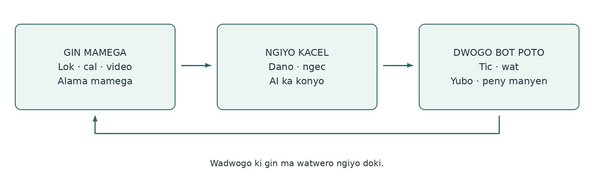
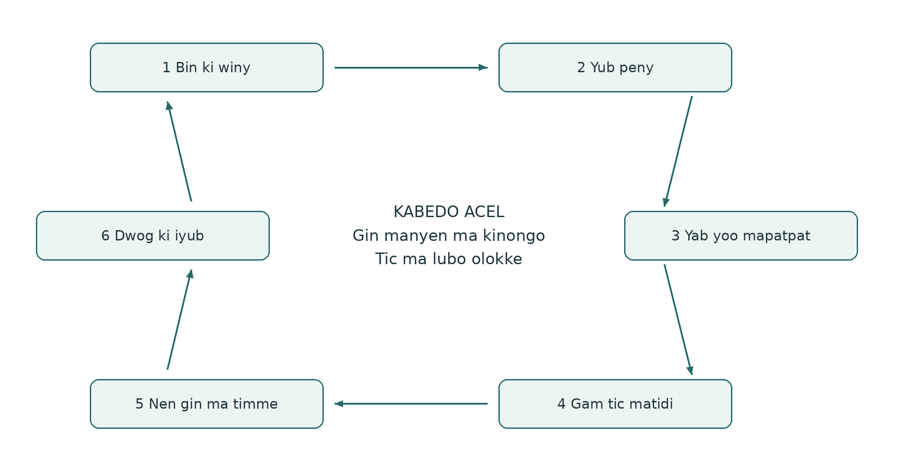
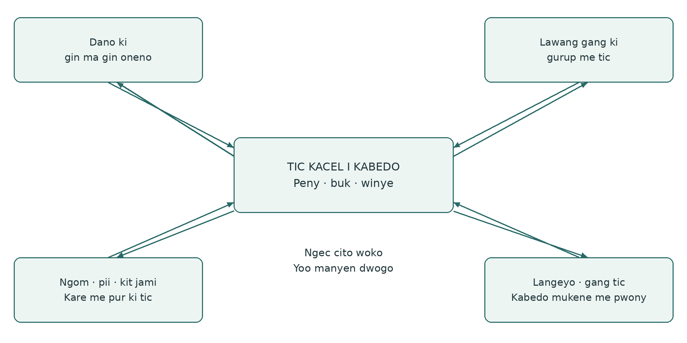
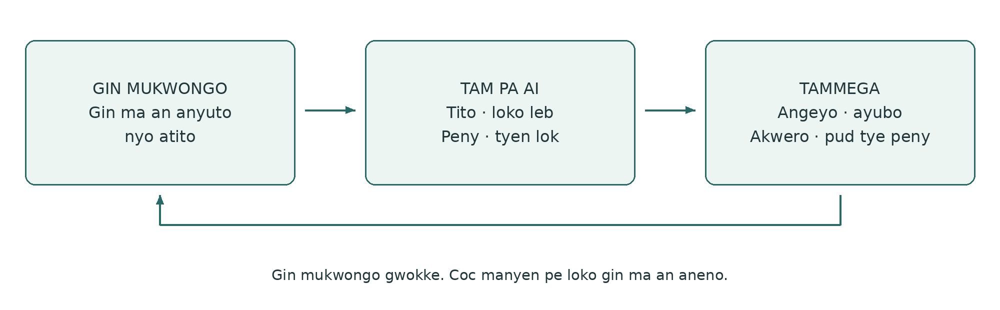

Buk me Poto
Buk me Poto
Ki gin ma dano oneno pi kome bot teko me tic kacel
Yoo me tic ki pwony ma dwogo, PG Ledger ki penyo AI ki diro
Loko leb Acholi v0.1.1 · 24 October 2026
Spiralweb Stewardship Association aye oyaro · Spiralweb Papers
Kiyubo i tic me Learning with Living Places
Loko leb man obedo me kare man keken, ki AI aye otimo. Pwod tye i ngiyo pa jo ma yubo coc. Bal ki lok ma pe atir twero bedo iye.
Buk me Poto obedo buk ma nyuto yoo me tic, ma Spiralweb Stewardship Association oyaro i Spiralweb Papers. Cakere ki tic pa dano i kabedo ma kwo tye iye: dano neno gin mo, gwoko lokke ki ngiyo kacel. Tic mo doko ma twere, ki gin ma kitimo loko yoo me tic ma lubo. Buk man kubo gin meno ki ngec ma konyo, penyo AI ki diro, ki jami ma twero konyo kwo i kabedo meno.
Cak ki gin mo ma tye i ticci. Lok, goyo cal, alama mamegi, cal, video ki coc twero gwoko gin ma ineno. Gurup moko yoo me nongo jami ki kony ma mite; pe mite ni ibed ki cim mamegi. Gin ma iyero nywako doko gin me poro ki yubo lok i anyim. Dano aye gibedo lurem ma penyo AI ki diro, kengi nyo kacel. Gin ma dano oneno aye cakere; pe gin ducu ma kitamo nyo oneno myero kicoy.

Tic ma kube kacel
Buk mamegi gwoko gin ma ineno ki kit ma ingeyo. Ngiyo kacel kubo lok ma kiyero ki peny. PG Ledger gwoko gin ma kigamo pi tic, moko tam, jami ki gin ma otimme i ngeye. Pwony ma dwogo obedo yoo ma gin ma kitimo twero loko ngec ki tic ma lubo. Pot ma lubo nyuto ngiyo acel cake i acaki wa i agiki, eka tito bute mapatpat.
Buk man kubo tic me Healthy Roots, PG Ledger ki twero pa dano i tic ki AI. I spiralweb.earth itwero nongo lok pi gurup ki watte i kabedo mapatpat. I papers.spiralweb.earth itwero nongo coc, cik me tic ki jami me tic. Itwero tiyo ki buk man labongo bedo i wat me tic ki gurup. Gin ma ineno twero kelo tam me loko jami me tic kacel.
Ti ki buk man i yoo ma imito, ki ilokke me rwatte ki kabedowu. Kwan acaki, cak ki peny ma tye, nyo nen pot me tic ka mite. Pe ngat mo myero pong pot ducu. Gin ma tye i nyig pot twero anyona; gin ma kupe cito bot coc ma tito ngecce. Pot ma twero loyo copy tye i nge coc madit.
Buk me Poto · v0.1.1 1 / 27
Gin ma tye i buk ki jami me tic
Cak ki ngiyo acel ducu ki apokapoka ikin buk mamegi ki ledger. Coc madit tye i pot 3–13. Cak ki gin mamegi i pot 14–16. Ka gurup mito gwoko gin ma kigamo kacel, yer pot me tic i pot 17–26.
03 Ngiyo cake ki neno mukwongo wa i dwogo
04 Buk, ngiyo kacel ki PG Ledger
05 Yoo abicel me pwony ma dwogo
06 Gin ma kinongo ki kama oaa iye
07 Ngiyo kit ma gin tye, ma pe kingeyo ki ma pe kicoyo
08 Ki lok pa dano acel acel bot peny me kacel
10 Tic me pwony ki miti ma ngeye
12 Stewardship economy ki gin ma twere kacel
13 Gwoko lok kacel, tic ma dano tingyo ki ngiyo ada
16 Pot me lok ki AI ki nywako gin ma kiyero
17 Ka gurup mito gwoko lok kacel ki Format 1
21 Format 3: Tic ma kiye ki doge
23 Format 4: Gwoko gin ma kimoko
27 Coc mukene ki cik me tic ki buk
Nga tiyo ki ngo? Buk ki pot me kony tye pi dano ducu. Format 2 ki 3 konyo neno ki tic me gurup. Format 1, 4 ki 5 konyo ngiyo kacel, moko tam ki gwoko lok me cente. Jo ma kigamo ticgi aye gigwoko ki moko lokke; jo ducu ma lok man makogi myero gutwer penyo ki yubo bal.
Pe ngat mo myero pong pot ducu. Kabedo mo twero dong nono, ki pe myero kipong ki tam akwana. Ti ki yoo me nyuto tam ki coc ma romo tic meno.
Buk me Poto · v0.1.1 2 / 27
Ngiyo cake ki neno mukwongo wa i dwogo
Lapeny man nyuto kit ma buk, lok, jami me tic ki tic twero kube. Obedo lapor ma twero temo; pe obedo lok pi tic ma dong kitimo.
Dano neno gin mo
Dako ma pur mako video me ngom ma otwo, ki tito i lebbe gin ma en oneno. Ngat mukene goyo cal me kabedo ma nen calo tye ki ngico mapol. Gigwoko gin mameggi i buk ki alama me nongo. I acaki man, gin ma gin oneno ki tam pi tyen lokke patpat.
Peny me kacel cako nen
I gure, ginyuto gin ma giyero. Gurup poro gin ma dano oneno ki yero ngiyo um me ngom. Gitito tyen yer meno ki gwoko peny mukene pi kare mukene. AI twero konyo tito lok ki miyo tam pi tyen lokke. Dano gingiyo ki guyubo ka lok olokke ki gin ma kinongo bot gin ma pe pud kingeyo.
Kigamo tic mo
Gurup yero temo matidi, ngiyo twero ma mite, ki gamo kare, jo ma bitingyo tic, jami ki limo ma lubo. Pot me tic gwoko gin ma kigamo. Gin mo ma tye i buk twero kube ki lok me kacel ki alama, labongo coyo doki.
Tic ma tye i nge temo nen
Lawang gang miyo jang yat ma kingolo. Gurup ngiyo ka ber pi tic ki gamo terone ki gwokone. Ginongo ni ngat acel onongo bitye ki tic mapol i kine gure. Peny medde: gwok man twero mede nining? Gin ma kimoko ki cente ma kitiyo kwede kicoyo i potgi mapatpat.
Kabedo ki gurup miyo lok manyen
I limo ma lubo, kiporo gin manyen ki acaki. AI owaco ni pii ma kitiyo kwede odok piny, ento pe kipimo. Gurup yubo coc ki ngiyo gin ma twero waco. Terone twero mito tic mapol, nyo gin mukene tito apokapoka. Kiloko temo ki pok me tic.
Gin ma kinongo yabo yoo mukene
Gurup twero lwongo lapor tam nyo gang pwony me pur me konyo i peny ma dong ngeye maber. Winye manyen twero kelo jami, pwony nyo cul pi lubo tic ma mite. Ka gudwogo, gingiyo gin ma otwere i ada. Ngec me kacel nongo te maber, kadi tam mapatpat ki gin ma pe ngeye twero dong.
Yoo man twero tero nino me tic mapol nyo kare me pur acel. Peny maber, juk ma mite, nyo tam ki tyen lok me pe mede twero bedo adwogi maber me dwogo bot peny.
Buk me Poto · v0.1.1 3 / 27
Buk, ngiyo kacel ki PG Ledger
Buk ki ledger gwoko bute mapatpat me tic acel. Buk miyo kabedo me neno ki ngiyo. Ledger kubo gin ma kiyero ki gwoko lok kacel pi tic ki lubo. Pwony ma dwogo obedo gin ma timme i kare; pe buk mukene.
But | Ticce | Lapor ma ngeye |
|---|---|---|
Bukka | Gin ma aneno, peny, temo ki tammega i yoo ma ayero. | Video me pii ma tye ka mol, ki titoka. |
Ngiyo kacel | Lok, poro ki ngiyo ki ngec ma mite pi peny ma kiyero. | Wangiyo pingo pii gure kany. |
PG Ledger | Lok ma kigamo gwoko kacel, ma twero yubo, pi te tic, jo ma tingyo tic, jami ki adwogi i anyim. | Gin ma kinongo kube ki tic ki limo i ngeye. |
Pot abic me tic | Jami me tic pi kare mapatpat i gwoko lok kacel. | Pot acel gwoko tic; mukene gwoko cente ma otiyo. |
Dwogo | Gin ma kitimo twero loko ngec, winye ki tic ma lubo. | I nge kot, wangiyo temo ki waloko. |
Ka gin ma tye i buk mito kube ki ledger
Ka gurup tye ki tyen lok ma ngeye me dwogo bot gin mo ki kubo ki tic kacel, gimoko but ma kiketo, nga ma twero neno ki kit me yubo bal. Alama ma cito bot gin mukwongo twero romo. Gin mamegi pe doko me kacel pire kene, ki pe myero buk ducu cito iye.
Gin ma weko ledger doko gwoko lok ma kwo
Pot acel gwoko lok. Pot ma kube doko ngec ma konyo ka kitwero lubo watgi, kama guaa iye ki jo ma tingyo tic. PG Ledger kwo ka dano dwogo: gingiyo gin ma otimme i ngeye ki guweko ngec meno loko tic ma lubo. Pong pot abic keken pe kelo tic man.
Buk pa dano twero dong kene. Tic kacel bene twero cako ki yoo me gwoko lok ma dong tye nyo lok me wang ki wang. Gin ma dano oneno pire tek mapat ki coyo. Pot pe obedo cik me winyo dano. Gin ma pire tek aye wat ikin neno, winye, tic ki yubo bal.
Buk me Poto · v0.1.1 4 / 27
Yoo abicel me pwony ma dwogo
Pwony aa ki dwogo bot peny, adwogi me tic ki gin ma jo mukene oneno. Dwogo acel twero bedo lok acel, nino mapol nyo kare me pur. Yoo man nyuto kama wacito iye; kare ki dwogo lubo gin ma peny mito.

1. Bin ki winy. Nga ki ngo tye kany, ki wan wabino ki ngec ango?
2. Yub peny kacel. Ngo ma wamito ngeyo nyo loko?
3. Yab tyen lok ki yoo mapatpat. Tam ki yoo ango ma myero wangii?
4. Yub tic me bedo ma twere. Ngo ma wabitemo, ki jami ango, ki nga ma bitingyo tic?
5. Nen gin ma timme i ada. Ngo ma waneno, bene gin ma uro wa?
6. Dwog ki iwek gin ma kitimo loko yoo. Ngo ma mede, lokke nyo jik?
Tam me kare man kubo tic
Working wager tito gin ma gurup tamo ni bitimme ki gin ma twero loko ngecgi. Kubo peny, tic, pwony, jami ki ngiyo i ngeye. Lapor: um me ngom twero gwoko ngico ka um meno ber ki ticce twero mede. Ngii kit ma jami ma kipito tye, tyen lok mukene ki tic ma mite i ada.
Buk me Poto · v0.1.1 5 / 27
Gin ma kinongo ki kama oaa iye
Buk twero bedo pepa, dwon, cal nyo video. Dano acel acel yero kit me nyuto tamme. Buk me kacel gwoko lok ma kiyero ki winye ma mite. Apokapoka ikin lok gwokke. Won kabedo, won tic nyo latel lok pe twero lok pi gin ma jo mukene oneno.
Neno gin ma tye mapat ki kubo lok
Cak ki gin ma dano neno, timo nyo mito nyuto. Keto nino dwe, kabedo ki kama lok oaa iye pi gin ma myero kinong doki. Alama twero bedo B01: limo mukwongo i [nino] i [kabedo]; cal ki dwon twero bedo B01-photo ki B01-audio. Gurup yero yoo mamege ki gwoko kabedo ki nying ma mite mung.
«Yadi adek tye ki pot ma olokke yellow» obedo gin ma kinongo. «Atamo ni pii pe romogi» obedo tam me tito. Gin ma dano oneno dong obedo ngec ma twero yubo ki neno doki, pimo ki ngec mukene. Mako dwon gwoko lok; pe nyuto ni tyen lok meno obedo ada.
Kony me nyuto tam ki moko lok
Ka ngat mo konyo coyo, loko leb nyo mako dwon, lok pa dano ki tyen lokke gwokke. Kicwako coc bot dano meno me yubo nyo yee. Ka gwoko lok pire tek, kinyuto kony ki loko leb ma otimme. Gin mukwongo gwokke ka tyen lok olokke. Yubo bal ki dog rom ki yubo ki coc, ki myero otwer loko tic.
Twero pa dano ki jami ma kitiyo kwede kacel
Gwoko gin mamegi, weko gurup neno, miyo bot AI ki yaro bot lwak obedo yer mapatpat, ki tyen lok ki jo ma binongo ma ngeye. Gin mukene twero dong labongo coyo. Lok ma mite pi cente ki ber bedo kiketo ki kitito kene.
Yoo ma kitye kwede: pe nywak cal ma nyuto lutino ma kitwero ngeyo. Ka mite pat, myero ngii cik ma mako, yee pa lunyodo nyo lagwok ma mite, ki tam pa latin ma lubo mwakake ki ngecce. Mung ki ber bedo pa latin aye mukwongo.
Gam nga ma gwoko, nga ma neno, kama kigwoko, kit ma kopi kupe ki kit me kwanyo kopi ki jami ma kitiyo kwede kacel. Gwok kopi ma kigamo mapat ki kwanyo. Mapat ki miyo gin bot AI ma woko, mok ngo ma kicwalo ki cik me gwoko ki tic doki ki gin meno. Cwal gin ma kiyero ki ma mite keken.
Kare obedo but me tic
I Learning with Living Places, neno, tic me buk ki tito kacel ma kigamo tye i kare me pwony ki tic ma kicul pire. Gin mukene ma kimiyo obedo me miti pa dano. Gurup mukene gamo tic ma twere. Coyo myero okony tic, ki kiyot ka doko pek.
Buk me Poto · v0.1.1 6 / 27
Ngiyo kit ma gin tye, ma pe kingeyo ki ma pe kicoyo
Ngiyo kit ma gin tye mako gin acel i kare acel. Moko gin ma kicoyo mako gin ma myero kigwok. Gin aryo man pat.
Rangi me traffic lights nyuto tam pa dano ki tyen lok
Alama | Tyen lok pi tic ma lubo |
|---|---|
Green · alum | Gin ma dong kingeyo twero konyo tic matidi ma lubo i twero ma kigamo. |
Yellow · rangi ma nyuto ni mite ngiyo doki | Gin ma tye mito ngiyo, loko ki ngiyo doki. |
Red · makwar | Mite gwoko, juk nyo yubo. |
Pe kingeyo | Gin ma kingeyo pe romo ngiyo kit ma gin tye. Man pe yellow. |
Ngii kabedo ma kwo tye iye, teko pa dano me mede ki loc me kacel kengi. Gwok nino, gin ma lok aa iye ki ma pe ngeye; pe yub rangi acel me dul ducu. Green i gin acel pe kwanyo red i gin mukene. Ka dano ool, juk nyo dwok tic ma jenge i komgi; gwok ma mite ki miyo tic bot ngat mukene maber twero mede.
Pe kingeyo pat ki pe mako peny ki ma kiweko ki miti
Pe kingeyo: peny mako ento ngec pud pe romo. Pe mako peny: peny meno pe rwate ki ngiyo man. Kiweko ki miti: gin mo pe kicoyo nyo pe kiketo i coc man. Man pe tito kit ma gin meno tye. Kabedo nono pe tye ki tyen lok acel; dano ki AI pe myero gutam pire ki akwana.
Twero me weko gin mo labongo coyo
Peny twero cako ki gin ma kinongo, ngec pa dano nyo gin ma dano oneno ki gwoko labongo coyo nyo mako dwon. Dano acel acel yero gin ma gwoko. Gin ma jo mukene gitamo i cwinygi obedo megi me nywako ka gimito. Ngec ma kigwoko kacel lubo twero ki winye pa jo ma makogi.
Pe bene myero keto alama ni kiweko gin mo ki miti. Kadi tito ni gin mo tye twero bedo gin ma mito mung. Ling pe mito tyen lok ki pe miyo twero me pong kama dong nono. Lok ma kigamo ni mite pi cente, ber bedo ki tic kacel kiketo kene; pe miyo twero me neno buk pa dano ducu.
Lapor: ngico me ngom twero bedo ma pe kingeyo pien pe kingiyo maber. Peny pi kulu twero pe mako poto man. Dwon pa dano twero dong woko me lok me kacel labongo tito ni tye.
Coc ma kubbe: Knowing From the Ground · Moral Biology
Buk me Poto · v0.1.1 7 / 27
Ki lok pa dano acel acel bot peny me kacel
AnchorPoint konyo gwoko wat ikin dano, kabedo, ngec, winye ki jami pi kare malac. Ngiyo kacel twero timme wang ki wang ki mede ki wat ki internet. Coc me kacel keken pe kelo twero me moko tam kacel; twero me moko tam mito winye.

Acaki mayot me kacel
Dano acel acel twero miyo gin acel ma oyero, ki twero bene pe nywako. Gurup ngiyo gin ma rom ki pat, ki yero peny ki tyen lok ma ngeye. Yer lubo miti, kit ma pire tek, kare ki gin ma twere. Peny mukene kigwoko pi dwogo i anyim. Coc myero ogwok tam ma pat pi yer, ki nga ma pe kiwinyo dwonne.
Ka peny kato woko me gurup
Gam nga ma myero kilok kwede, ngo ma gurup mito penyo, gin ma twero nywako ki nga ma bidwogo ki adwogi. Tam, ngiyo i laboratory, lok ki gang tic ki wat ki lupur mukene kingiyo kacel ki gin mukwongo. Adwogi ki woko konyo tic ma lubo i nge ngiyo ki yee pa jo me kabedo. Man aye bottom-linking i tic.
Wat me piny ki jami ma kwo
Lub gin ma peny jenge iye: pii, ngom, kit yadi ki lee, kodi, cam, tic ki moko tam pa gang tic. Map ki kalenda me kare twero nyuto wat ma kato dog ngom ki project. Dwon ki yoo me ngec mapatpat twero yubo bal pa ngat mukene. Gin ma timme i poto twero kwero tyen lok ma wan ducu wamiyo.
Buk me Poto · v0.1.1 8 / 27
Dano ma penyo AI ki diro
Kengi nyo kacel, dano aye lurem ma penyo AI ki diro: giyabo tam bot kony ma twero kelo ki gingiyo bal, tito ma kato gin ma ngeye ki loko tyen lok. AI twero konyo nyuto tam, loko leb, tic ki kama lok aa iye ki poro. Lokke konyo ngiyo ka dano gingiyo ki gitemo i tic.

Ngii coc mapat ki tito tyen lokke
AI nongo tic ma doge ngeye ki gin ma kiyero pi tic meno mukwongo. Ki cal nyo dwon, ngii kit ma otito mapat ki mede. Lok, cal ki loko leb ma pe ngeye dong ki alama ni pe ngeye. Ka kony me leb nyo jami pe romo, nong kony pa dano ma ngeyo.
Lok me cako ki AI
Tit mukwongo gin ma itwero kwano, winyo nyo neno i gin ma kiyero. Nyut ma pe ngeye ki ikur yubo balmega. Pok gin ma an aneno, tyen lokmega ki tammi. Pe pong kabedo nono. Pok pe kingeyo, pe mako peny ki ma kiweko ki miti ka kitito. Pe tam gin mo ki ling ki pe tem me dwogo gin ma kiweko. I nge meno keken, mi tyen lok mukene ki yoo me ngiyogi. Pe yub lok nyo kama lok aa iye ma pe tye.
Eka peny: lok mene aa ki gin mamega? Ngo ma AI omedo? Kama lok aa iye mene ma twero ngiyo? Gin ma pe ngeye ki tam mapatpat dong? Ngo ma mito neno doki nyo tam pa langeyo? AI bene twero weko yoo mo ma pire tek; adwogine pe moko dog me peny.
Last Impulse i tic
Dano ma lok mako twero niang, yubo, kwero ki juko coc nyo tic, ki tingyo tic i twero ma kitye kwede. Ling pe yee. Yee pi kit ma kicoyo pe miyo twero me yaro nyo timo tic.
Lapor: «Ngom owiny calo ngico» olokke i coc pa AI me bedo «Pii ma kitiyo kwede odok piny». Dano nyuto kabe ma lok owoo iye, yubo coc ki moko ngiyo ma mite. Gin mukwongo, kony pa AI ki yubo bal miyo te me ngiyo AI in Right Relationship.
Buk me Poto · v0.1.1 9 / 27
Tic me pwony ki miti ma ngeye
Tic me pwony miyo yoo me dongo diro nyo ngec mo. Twero bedo lok macek, wot i poto, temo, nyuto tic nyo tic ikin gure. Buk twero gwoko gin ma kinongo i tic meno. Ti ki pot me tic ka tye miti ma ngeye me gwoko lok kacel.
Tic | Gin ma kitemo pwonyo | Gin ma twero gwoko |
|---|---|---|
Neno ki tito | Poko gin ma kinongo ki tyen lok ma twero bedo. | Cal ma kigoyo, lok, cal nyo dwon pa dano. |
Poro kabedo nyo kare | Ngiyo rom, apokapoka ki gin ma mito romo pi poro. | Gin aryo ma kinongo ki kabedo ki kare ma ngeye. |
Ngiyo kony pa AI | Ngeyo, yubo ki penyo coc ma kiweyo doki. | Gin mukwongo, tam pa AI ki yubo pa dano. |
Yero ki tic kacel | Tito yer ki ngiyo twero, jami ki lubo tic. | Peny me kacel ki winye ma doge ngeye. |
Yenyo ngec nyo kony | Tito gin ma mite ki ngiyo adwogi pa jo mukene. | Kwac ki gin ma konyo ma dwogo. |
Nyuto tic bot jo mukene | Tito ki nyuto gin ma kipwonyo, ki kabedo pi peny. | Nyuto tic nyo gin ma kiyero pi pwony. |
Peny abicel me yubo tic
Miti: tic man myero okony dano pwonyo ngo?
Acaki: gin ango ma wan oneno nyo wanongo ma wacako kwede?
Tic: ngo ma wabitimo, ki kony ango ki kare ango?
Lok: ngo ma wangiyo kacel, ki kwene ma tamwa twero pat iye?
Gwoko lok: ngo ma ber gwoko, bot nga, ki i kit ango?
Dwogo: awene ki nining ma wabiti ki gin ma wanongo doki?
Tic ma kigamo tye i kare me pwony ki tic ma kicul pire. Pe tye miti me miyo gin ki buk pa dano nino ducu. Tic me pwony ber ka yabo ngec ki tic ma konyo; dwong coc pe obedo miti pire kene.
Buk me Poto · v0.1.1 10 / 27
Yubo tic pi kare malac
Kare ki mede me ngiyo
Nino me tic twero cako ki gin ma gurup mito neno ki gik ki gin ma mito lubo. Gurup dwogo bot peny ki tic, kare me pur ki moko tam ma ngeye. Giyero kare me ngiyo kacel ma kubo peny, jami ki gin ma kinongo labongo coyo gin acel diryo mapol.
Yoo abic me pwony aye ngom, pii ki kabedo; cam ki kabedo me jami ma kwo; stewardship economy; tic kacel ki gang tic; ki pwony ki nywako. Peny acel twero kubo yoo mapol. Gikonyo yabo ngiyo ki nyuto wat ma pe kineno. Wek bene kabedo me nyuto diro, ngiyo nyo nywako gin ma uro dano labongo mito coc.
Lapor ki poto aryo me pwony
I farm, kiyubo poto aryo pi temo pur mapatpat. Gurup tito kit ma gicako kwede ki gin ma gin oneno ki ngiyo pa langeyo ma mite. Giyero peny, gwok pi um me ngom ki pii, gamo temo matidi ki coyo jami ki kare me tic. Gang pwony me pur nyo lapor tam donyo ka konyo. I limo ma lubo, gingiyo yoo ki tic ma lubo.
Kare | Tic kacel | Te pi kare ma lubo |
|---|---|---|
Yube | Jo ma tingyo program temo yoo ki ngiyo leb, yoo me nongo jami, tic pa dano ki ber bedo. | Gin me cako ma kitemo ki winye ma ngeye |
Yabo | Gurup temo yoo mapatpat me nyuto ngec ki konyo yero peny. | Peny me kabedo ki jami ma kiloko |
Ngiyo | Tic, neno, lok ki ngec ki temo matidi. | Gin ma kinongo, yubo bal ki moko tam |
Nywako | Gin ma kiyero donyo i lok ki jo mukene ma makogi. | Adwogi ma konyo ki wat manyen |
Mede | Kingiyo pwony, jami, kony ki tic ma dano tingyo. | Miyo tic ma kigamo ki tic ma lubo ma twere |
Yube ki gwok
Wek kare me yubo jami mapat ki gurup cako. Gam yoo me tic, jami, ber bedo ki diro ma mite mapat ki tic. Neno pe miyo twero me donyo i gin ma twero balo dano i pii, ngom, yadi nyo jami ma kiketo. Tic ma kigamo nongo cente nyo kiketo doge i yoo ma ngeye. Dongo me piny ki tic kacel twero mede i nge kony me cente, labongo kony meno culo pire.
Buk me Poto · v0.1.1 11 / 27
Stewardship economy ki gin ma twere kacel
Stewardship economy penyo kit ma tic, ngec, jami ki tic ma dano tingyo twero gwoko gin ma kwo pa dano ki lwak jenge iye. Cul twero gwoko kare ki teko pa dano me mede; pe nyuto wel pa dano nyo kabedo ducu. Peny kubo pur ki wat ki cik pa gang tic ma weko gwok mede.
Abundance obedo teko pa dano me yubo gin manyen, ki yoo ma tic kacel twero yabo. Peny ngeye: ngo ma dong tye kany, ngo ma twero dongo, ki ngo ma watwero nongo kacel? Twero bedo jami, tam, diro, cente, yoo me nongo gin ki kony i tic. Can ki wel ma mite dong nen.
Peny ki poto | Wat ma twero bedo | Gin ma twero dwogo |
|---|---|---|
Ngom gwoko ngico nining? | Lawang gang ma tye ki jami ma romo tic ma odong | Um me ngom ki winye me tero |
Kitwero yubo ngom nining? | Jo ma ngeyo yubo compost ki lagwok lim | Compost nyo cwer lim ma ber, ki tam |
Kitwero dongo yadi mapol nining? | Gurup me nywako kodi nyo gang pwony me pur | Kodi, jang yat ki diro me dongo |
Kitwero yubo miyo pii nining? | Lupur ki langeyo jami | Temo, yubo nyo yub me cente |
Ngo ma okelo bal man? | Langeyo ma rwate | Ngiyo ki tic ma ber bedo |
Kitwero nywako gin ma wanongo nining? | Lupur mukene ki gurup me pwony | Nyuto tic nyo jami me pwony |
Cente me tic ma lubo bino ki kwene? | Tam pa gurup ki lok | Kwac ma ngeye ki gin ma nyuto ki wel |
Nga ma twero tingyo tic? | Ngiyo tic kacel | Ngat ma loko ngat mukene ki miyo tic |
Lub gin ma kimiyo dwogo bot tic
Pok tam, wat, winye, gin ma dong kigamo ki adwogi me ada. Ngii ka romo tic, ber bedo, terone, kare, won gin ki nga ma bigwoko i ngeye. Gin ma ngat mo twero miyo pe obedo gin ma dong kigamo. Gwok lok pi kony ma kikwero ki tic ma pe nen ka twere i dog ma kigamo.
The Steward’s Journey tito wat mapatpat ki tic, labongo yoo acel ma myero kilub. Lapur twero ngiyo kabedone, nywako ngec nyo donyo i winye ma doge ngeye pi temo. Kony mito winye mamege; pe obedo gin ma kitwero nongo keken ki kato i kare ma kiketo. Pwonyo lurem ki yenyo cente twero dongo ka dano mito ki tye ki teko me timo.
Buk me Poto · v0.1.1 12 / 27
Gwoko lok kacel, tic ma dano tingyo ki ngiyo ada
PG Ledger kubo gin ma kinongo ma kiyero ki tic, moko tam, jami ki adwogi. Ti ki pot ma romo tic. Ti doki ki gin mukwongo ki alama; pe coyo gin acel i lok mapatpat ma kiketo calo ada mapatpat.
Pot me tic | Ticce |
|---|---|
Neno gin ma tye | Gwoko gin ma kinongo, kama oaa iye, kabedo ki ma pe ngeye. |
Tic ma kiye ki doge | Keto tic ma pe kato adek ma twere, ki jo ma tingyo, yoo me juko ki dwogo. |
Gwoko gin ma kimoko | Gwoko tyen lok, twero, tam ma pat ma pire tek ki lok manyen. |
Lok me cente | Kubo cente, miti, pepa me nyuto ki neno i ngeye. Buk me cente ma cik mito gwokke kene. |
Ngiyo kacel | Poko ngiyo Ngom / Kwo (Land / Life), teko pa lagwok me mede (Steward Viability), ki loc me kacel (Governance / Commons). Pe moko alama acel pi ducu. |
Winye ma twere
Gurup gamo nga ma tingyo tic, nga ma loko ngat mukene, nga ma tye ki twero me moko tam, kit me lok i tam mapatpat ki awene me ngiyo kacel. Cente ki peny me kabedo kube ki miti ki tic ma ngeye. Dano pe yee cul megi kengi nyo ngiyo koko pi komgi. Yoo me lok bot ngat ma pe donyo i lok meno ngeye ki twere.
Jo ma mito twero dongo pwonyo lurem nyo gurup manyen ki keto mitigi. Loc me kacel myero oyab yoo me mede ki alokaloka, ki nyut gwok, loko leb ki kubo tic. Tic me miti pe kitiyo kwede me umo tic ma mite ma pe tye ki cente.
Ngii ka yoo man tiyo
Ti ki peny me ada me ngiyo ka dano acel acel ngeyo ki yubo gin mamege, penyo AI, loko peny me kacel ki tic ki ngec ka dwogo. Gwok lok pa AI ma konyo ki ma twalo ki yubo bal pa dano. Man miyo te me ngiyo pwony ki AI, labongo tamo ni coc ma mol maber obedo pwony. Tem bene ka buk yot me cako, ka dano niang alama ki ka yubo bal loko tic i anyim i ada.
Lub alokaloka i poto, pek me tic ki twero me moko tam. Dongo me piny pe kwanyo oo nyo balo twero. Gin ma pe ngeye ki yer me pe coyo pe obedo remo. Ngec ma kinongo twero yubo jami me tic, ngiyo ki cik. Ngii kony pa AI i nge kwano kare me ngiyo, loko leb ki tic ma kiweyo bot jo mukene.
Buk me Poto · v0.1.1 13 / 27
Pot pi gin mamega
Ti ki cal, alama, lok, cal ma kimako, dwon nyo video. Pot man obedo yer; nyut gin mukwongo ma iyero. Gin ma dano oneno pe mito coc me bedo ma pire tek i lok.
Nino nyo kare __________________ Kabedo __________________
Alama nyo yoo me nongo gin mamega __________________
Gin ma aneno nyo amito nyuto
Gin ma apenyo pire
________________________________________________________________________
________________________________________________________________________
Gin ma man poyo wi an nyo gin ma angeyo ki tic
________________________________________________________________________
________________________________________________________________________
Ka ati ki dwon nyo cal, alama me nongo aye __________________
Ka ngat mo okonya mako gin mamega __________________
Man obedo gin mamega. An ayero gin ma agwoko ki anywako. Kabedo nono pe mito tyen lok. Nywako mito winye pi gin acel ki tyen lokke.
Buk me Poto · v0.1.1 14 / 27
Pot me temo ki dwogo
Kony ma kiyero pi lok ki dwogo. Nyut pot me tic ma mako labongo coyo gin acel doki. Pok pe kingeyo, pe mako peny ki ma kiweko ka kitito; kabedo nono pe mito tyen lok.
Kabedo __________________ Nino __________________ Alama __________________
Penywa ki gin ma watamo pi kare man
________________________________________________________________________
________________________________________________________________________
Gin ma wabitemo ki gin ma twero loko ngecwa
________________________________________________________________________
________________________________________________________________________
Nga timo ngo, ki jami ki twero ango
________________________________________________________________________
________________________________________________________________________
Awene ma wabidwogo ki gin ma bimweko wajik
________________________________________________________________________
Dwogo ki nino: gin ma otimme i ada
________________________________________________________________________
________________________________________________________________________
Gin ma waloko nyo ma ngecwa pud pat iye
________________________________________________________________________
________________________________________________________________________
Nyut gin ma kinongo, moko tam nyo cente ka konyo. Adwogi ma kitamo ni bitimme pe obedo adwogi ma dong kineno.
Buk me Poto · v0.1.1 15 / 27
Pot me lok ki AI ki nywako gin ma kiyero
Kengi nyo kacel, dano aye lurem ma penyo AI ki diro. Gwok gin mukwongo, coc manyen ki yubo bal mapatpat. AI pe myero pong kabedo nono, tam gin ki ling nyo dwogo gin ma kiweko.
Nino __________________ Alama me gin mamega __________________
AI nyo kony mukene, ka mako __________________
Kony ma ngeye ma akwaco
________________________________________________________________________
Gin ma AI otito doki nyo omiyo tam pire
________________________________________________________________________
________________________________________________________________________
Gin ma angeyo, ayubo, akwero nyo pud pe angeyo
________________________________________________________________________
________________________________________________________________________
________________________________________________________________________
Gin ma an nyo wan dong wabingiyo nyo timo
________________________________________________________________________
________________________________________________________________________
Ka ayero nywako gin mo
Gin ma kiyero __________________
Ki nga __________________ Pi tyen lok ango __________________
Twero cwal bot AI __________________
Gin mo twero yaro, ki i kit ango __________________
Yubo balmega nyo loko yer me nywako bitimme nining __________________
Winye me nywako mako gin ma kigamo keken. Tit dog me kwanyo nyo dwogo yee mapat ki cwal gin bot jo mukene. Yeega pe mako twero pa ngat mukene pire kene.
Buk me Poto · v0.1.1 16 / 27
Ka gurup mito gwoko lok kacel
Format 1: Ngiyo kacel
Yer i pot abic ma lubo tic. Dano ducu twero miyo tam, penyo ki yubo bal. Gam nga ma gwoko pot ki nga ma tye ki twero me moko ngiyo, tam nyo lok me cente. Pe ngat mo myero pong abic ducu.
PG Ledger Format 1 · Steward Review Dashboard · Kiloko pi buk man
Gin ma oaa iye v1.4.2 · 18 October 2026
https://papers.spiralweb.earth/formats/format1-dashboard
Ka gurup mito ngiyo ka kare ma lubo twero mede, pot man konyo poko gin adek.
Ka kidwogo i kare ma kigamo, ngii kabedo ma kwo tye iye, teko pa dano me mede ki loc me kacel mapatpat. Tam obedo pa jo ma tye ki ngec ki twero ma mako. Pe pimo nyo alama acel pi ducu.
Lapor ki ngiyo meno
Ngom / Kwo
But me ngom kiumo. Kingiyo ngico i limo acel; tyen apokapoka pud pe ngeye. Tam: Pe kingeyo.
Teko pa dano me mede
Cawa ma kigamo dong kitiyo kwede, ento tero jami tero kare mapol kato yub. Tam: Yellow; winye manyen mite.
Loc me kacel
Twero ki jo ma tingyo tic ngeye; yee me nywako dwon pud pe tye. Pe kinywako pud.
Tic kwede ki wat
Lapor man pe miyo tyen rangi acel pi ducu. Pe kingeyo nyuto ni te me ngiyo pe romo; pe yellow. Gurup gamo kare ma lubo i dog ma kigamo ki gwoko tam mapatpat ma pire tek. Twero weko coyo; weko pe obedo tam i kit ma gin tye.
Pot me tic tye i pot ma lubo. Kiloko ento ticce madit dong. Pot ma gin oaa iye ki gin manyen twero yabo ki link. Kabedo me coyo twero kube ki lok, cal nyo dwon.
Buk me Poto · v0.1.1 17 / 27
Pot me Format 1
PG Ledger Format 1 · Steward Review Dashboard · Kiloko pi buk man
Gin ma oaa iye v1.4.2 · 18 October 2026
https://papers.spiralweb.earth/formats/format1-dashboard
Kabedo nyo wat __________________ Nino nyo kare __________________
Kama lok aa iye ki nga ma tingyo tic __________________ Alama ki nga ma twero neno __________________
Miti me ngiyo __________________ Jo ma miyo tam __________________
Ka kigamo ngiyo kit ma gin tye, yer green, yellow, red nyo pe kingeyo. Ka pe kigamo, wek kabedo dong nono.
Ngom / Kwo: te, tyen lok ki ma pe ngeye
________________________________________________________________________
________________________________________________________________________
Teko pa dano me mede: te, tyen lok ki ma pe ngeye
________________________________________________________________________
________________________________________________________________________
Loc me kacel: te, tyen lok ki ma pe ngeye
________________________________________________________________________
________________________________________________________________________
Tam ma pat, tic matidi ma lubo, nga ma tingyo ki dwogo
________________________________________________________________________
________________________________________________________________________
Pe rangi acel pi ducu. Green twero konyo tic matidi; yellow mito loko; red mito gwoko, juk nyo yubo. Pe kingeyo nyuto ni ngec pe romo. Nono pe ngiyo ki pe kipong ki akwana.
Buk me Poto · v0.1.1 18 / 27
Format 2: Neno gin ma tye
PG Ledger Format 2 · Observation Sheet · Kiloko pi buk man
Gin ma oaa iye v1.3.2 · 18 October 2026
https://papers.spiralweb.earth/formats/format2-observation
Ka gin ma kinongo mito nongo doki ki poro, pot man konyo gwoko te.
Ti ka gin mo pi kabedo, limo nyo gin ma otimme mite gwoko. Tit mukwongo gin ma kineno ki kit me nenone. Peny aboro pi ngom obedo yoo me cako ma twero loko nyo weko.
Lapor ki ngiyo meno
Gin ma kinongo
I limo B01, ngom ma malo winy calo otwo i kabedo aryo. Yadi adek tye ki pot ma olokke yellow. B01-photo ki B01-audio cito bot gin mukwongo ma dano ogwoko. Yoo B01 kitito i but pi kama lok aa iye.
Tyen lok me kare man
Pii ma pe romo obedo yoo acel. Ngom, kit yadi, miyo pii i kare mukato ki gin mukene pe kingiyo ma romo.
Ngiyo ma lubo
Gurup poro gin ma kinongo ki lok pi miyo pii, ki gamo poro ma lubo yoo acel maber.
Tic kwede ki wat
Pe kineno pe tito ni pe tye. Nying me yat nyo lee ma kitamo mito ngiyo. Gwok kabedo, kare, tic me neno ki ma pe ngeye.
Pot me tic tye i pot ma lubo. Kiloko ento ticce madit dong. Pot ma gin oaa iye ki gin manyen twero yabo ki link. Kabedo me coyo twero kube ki lok, cal nyo dwon.
Buk me Poto · v0.1.1 19 / 27
Pot me Format 2
PG Ledger Format 2 · Observation Sheet · Kiloko pi buk man
Gin ma oaa iye v1.3.2 · 18 October 2026
https://papers.spiralweb.earth/formats/format2-observation
Kabedo nyo wat __________________ Nino nyo kare __________________
Kama lok aa iye ki nga ma tingyo tic __________________ Alama ki nga ma twero neno __________________
Cawa, kare, piny ki yoo me neno __________________
Lok peny me rwatte. Pe kingeyo nyuto ni ngec pe romo; pe mako peny nyuto ni tye woko me peny. Twero weko gin mo labongo tyen lok.
Ngom ma malo ki um me ngom __________________________________________________
Kit ma yadi ma dongo tye __________________________________________________
Mol me pii __________________________________________________
Alokaloka ki gin ma dongo i ngeye __________________________________________________
Kit jami ma kwo ki alama me kwo __________________________________________________
Alama me ngom __________________________________________________
Wot me jami ma aa ki gin ma kwo __________________________________________________
Gin ma an aneno nyo ngat mo omiyo ki miti pire ki kare me tic __________________________
Ngec pa dano ki ngec me kabedo, ki kama guaa iye
________________________________________________________________________
Tyen lok, kama lok aa iye nyo dwon, ki ma pe kingeyo
________________________________________________________________________
________________________________________________________________________
Buk me Poto · v0.1.1 20 / 27
Format 3: Tic ma kiye ki doge
PG Ledger Format 3 · Bounded Action Sheet · Kiloko pi buk man
Gin ma oaa iye v1.3 · August 2026
https://papers.spiralweb.earth/formats/format3-action
Ka gurup dong twero gamo tic, pot man konyo pi nga ma tingyo, doge ki lubo tic.
Ti pi tic matidi ma jo ma tingyo twero niang, gwoko ki juko. Gam miti, twero, gin ma tic bimako ki dwogo. Tic twero bene bedo kwac kony pa langeyo nyo kuro ngiyo ma mite.
Lapor ki ngiyo meno
Tic
Tem um me ngom ma ber i kabedo matidi ma kigamo, ki gwok kabedo me poro ka romo peny.
Nga ma tingyo ki dog tic
Ngat ma kigamo nyinge nongo yee ma mite ki ngiyo jami, ber bedo ki kare me tic.
Juk ki dwogo
Pe key jami ma pe kingeyo. Juk ka gin ma twero balo pud pe kiyubo nyo tic kato dog ma kigamo. Gam limo ma lubo mapat ki temo.
Tic kwede ki wat
Pe ti tic ma kato adek i kare acel ma dano ki kabedo twero gwoko. Tic matidi pe obedo labongo bal pire kene.
Pot me tic tye i pot ma lubo. Kiloko ento ticce madit dong. Pot ma gin oaa iye ki gin manyen twero yabo ki link. Kabedo me coyo twero kube ki lok, cal nyo dwon.
Buk me Poto · v0.1.1 21 / 27
Pot me Format 3
PG Ledger Format 3 · Bounded Action Sheet · Kiloko pi buk man
Gin ma oaa iye v1.3 · August 2026
https://papers.spiralweb.earth/formats/format3-action
Kabedo nyo wat __________________ Nino nyo kare __________________
Kama lok aa iye ki nga ma tingyo tic __________________ Alama ki nga ma twero neno __________________
Te, miti ki yee ma mite
________________________________________________________________________
________________________________________________________________________
Tic — pe kato adek | Ngat ma tingyo tic | Awene |
|---|---|---|
1 __________________ | ________________ | ____________ |
2 __________________ | ________________ | ____________ |
3 __________________ | ________________ | ____________ |
Gin ma tic mako, ber bedo, doge ki yoo me yubo
________________________________________________________________________
________________________________________________________________________
Nga ma twero juko, ki ngo ma pe myero ocak pud
________________________________________________________________________
________________________________________________________________________
Gin ma walubo ki awene me dwogo
________________________________________________________________________
________________________________________________________________________
Buk me Poto · v0.1.1 22 / 27
Format 4: Gwoko gin ma kimoko
PG Ledger Format 4 · Governance / Decision Log · Kiloko pi buk man
Gin ma oaa iye v1.3.2 · 18 October 2026
https://papers.spiralweb.earth/formats/format4-decision
Ka gin ma kimoko mito tito ki dwogo bot, pot man konyo gwoko te.
Ti ka moko tam, loko tic pa dano, tim pat, juk nyo agiki mito nongo doki ki penyo pire. Pot gwoko te me tam i kare meno. Gin ma kinongo i ngeye kimedo ki nino; pe loko gin ma otimme con.
Lapor ki ngiyo meno
Gin ma kimoko
Gurup loko tic me tero jami ki dwoko temo i twero ma kigamo.
Tyen lok ki tam ma pat
Tero jami otero kare mapol kato tam. Ngat acel mito wiro temo ducu. Kigwoko tam meno.
Twero ki yubo bal
Ngat ma tye ki twero moko alokaloka. Yee me yub cente ki timo tic lubo winye mameggi. Kidwogo bot gin ma kimoko i nge kelo jami ma lubo.
Tic kwede ki wat
Pot gwoko twero ki tyen lok; pe kelo twero manyen. AI twero konyo coyo, ento dano ngiyo ki yee coc ma mako.
Pot me tic tye i pot ma lubo. Kiloko ento ticce madit dong. Pot ma gin oaa iye ki gin manyen twero yabo ki link. Kabedo me coyo twero kube ki lok, cal nyo dwon.
Buk me Poto · v0.1.1 23 / 27
Pot me Format 4
PG Ledger Format 4 · Governance / Decision Log · Kiloko pi buk man
Gin ma oaa iye v1.3.2 · 18 October 2026
https://papers.spiralweb.earth/formats/format4-decision
Kabedo nyo wat __________________ Nino nyo kare __________________
Kama lok aa iye ki nga ma tingyo tic __________________ Alama ki nga ma twero neno __________________
Gin ma kimoko, miti ki nino me cako
________________________________________________________________________
Te, ma pe ngeye ki yoo mukene ma kingiyo
________________________________________________________________________
________________________________________________________________________
Twero me moko tam, dog twero ki miti ma larre
________________________________________________________________________
Jo ma lok makogi, ma kiwinyo, ma pe tye nyo ma tamgi pat, ki dog me yee
________________________________________________________________________
________________________________________________________________________
Kony pa AI ki ngiyo pa dano, ka mako
________________________________________________________________________
Nga ma tingyo, dwogo ki gin ma weko kiloko nyo kijuko
________________________________________________________________________
________________________________________________________________________
Buk me Poto · v0.1.1 24 / 27
Format 5: Lok me cente
PG Ledger Format 5 · Financial Ledger Sheet · Kiloko pi buk man
Gin ma oaa iye v1.3.1 · 17 October 2026
https://papers.spiralweb.earth/formats/format5-financial-ledger
Ka cente wot i ada, pot man konyo kubo cente ki miti ki kit ma kitiyo kwede i ngeye.
Ti pi cente ma kigamo, kubo ki miti, pepa me nyuto ki dwogo. Pot medde i buk me cente ma cik mito. Jami ki kare me tic me miti twero nyuto kene labongo yubo wel ma pe kingeyo.
Lapor ki ngiyo meno
Wot me cente
Cul me tero jami ma kigamo kicoyo ka otimme, ki cente me ada, kit cente, nino, lacul, lagam ki alama me pepa ma nyuto.
Miti ki pok
Tero um me ngom ma ber pi temo. Ngat ma tingyo cente moko kit cul ma lubo cik ki winye ki pepa ma nyuto. Pe kitwero nongo ki tam pi ber me gin keken.
Dwogo i ngeye
I nge kelo jami, coy gin ma obino ki kitiyo kwede i ada, nga ma otiyo ki lok ma pud odong. Adwogi ma kitamo pi ngom pud obedo tam me temo.
Tic kwede ki wat
Pok cente ma otiyo ki adwogi. Gurup twero miyo tam me A/B/C ma lubo miti me jami; ngat ma tingyo cente ngiyo pokke. Alama pe nyuto rangi nyo kit ma gin tye maber. Pok ma pud pe ngeye dong peny.
Pot me tic tye i pot ma lubo. Kiloko ento ticce madit dong. Pot ma gin oaa iye ki gin manyen twero yabo ki link. Kabedo me coyo twero kube ki lok, cal nyo dwon.
Buk me Poto · v0.1.1 25 / 27
Pot me Format 5
PG Ledger Format 5 · Financial Ledger Sheet · Kiloko pi buk man
Gin ma oaa iye v1.3.1 · 17 October 2026
https://papers.spiralweb.earth/formats/format5-financial-ledger
Kabedo nyo wat __________________ Nino nyo kare __________________
Kama lok aa iye ki nga ma tingyo tic __________________ Alama ki nga ma twero neno __________________
Kit cente me acaki __________________ Ngat ma ongiyo __________________
A: Ngom ki jami ma kwo · B: Teko pa lagwok me mede · C: Kubo tic ki loc me kacel.
Cente marom, kit cente, wel me loko cente ki nino
________________________________________________________________________
Kama cente aa iye, lagam, yoo me culo ki pepa ma nyuto
________________________________________________________________________
Pok ma lubo cik ki alama me jami
Ngat ma tingyo cente aye pongo ki winye ki pepa ma nyuto. A/B/C nyuto miti; ngat meno bene ngiyo pok. Nyut gin ma pe kimoko calo peny.
________________________________________________________________________
Yoo me neno, yee ki ngiyo coc
________________________________________________________________________
Gin ma kineno i ngeye
Nino, kama lok aa iye, tic me ada ki gin ma nyuto
________________________________________________________________________
________________________________________________________________________
Ma pe ngeye, yubo bal ki ngiyo ma lubo
________________________________________________________________________
________________________________________________________________________
Coy wot me cente acel i kare acel. Buk me cente ki yee ma cik mito gwokke i yoo ma kiye. Miti pe obedo adwogi.
Buk me Poto · v0.1.1 26 / 27
Coc mukene ki cik me tic ki buk
Papers obedo kabedo me ngec ma dano ducu twero neno, ki gin ma kiyubo i kare mapatpat ngeye. Buk man kubo yoo me tic ma kiyero kacel. Pe kelo twero manyen i kabedo nyo loko winye ma tye. Buk man twero nongo penyo ki ngec ki temo i kabedo. Gin ma kinongo twero loko buk ki coc ma oaa iye.
Healthy Roots (leb munu)
https://papers.spiralweb.earth/protocols/healthy-roots
PG Ledger (leb munu)
https://spiralweb.earth/pg-ledger/
Pot abic me tic
https://spiralweb.earth/formats/
Sophia Lumen (leb munu)
https://papers.spiralweb.earth/protocols/sophia-lumen
Moral Biology (leb munu)
https://papers.spiralweb.earth/papers/moral-biology
Knowing From the Ground (leb munu)
https://papers.spiralweb.earth/papers/knowing-from-the-ground
GP22 Capacity and Contact (leb munu)
https://papers.spiralweb.earth/papers/capacity-contact-stewardship-economy
GP23 A Decent Economy (leb munu)
https://papers.spiralweb.earth/papers/a-decent-economy-under-the-jurisdiction-of-life
Living Landscapes (leb munu)
https://papers.spiralweb.earth/papers/living-landscapes
The Steward’s Journey (leb munu)
https://papers.spiralweb.earth/papers/srip-the-stewards-journey
Atlas, working wagers ki Field Papers mukene (leb munu)
https://papers.spiralweb.earth/library
Gang pwony me pur pa FAO (leb munu)
https://www.fao.org/farmer-field-schools/overview/en/
Coyo gin me piny pa Lawrence Hall of Science (leb munu)
https://lawrencehallofscience.org/activities/exploring-nature-journaling/
Tic ki buk ki nyuto kama oaa iye
Itwero loyo copy, loko leb ki loko coc, cal ki pot nono i cik CC BY 4.0. Nyut: Spiralweb Stewardship Association, Buk me Poto, loko leb Acholi v0.1.1, 2026. Nyut alokalokani. Pot abic kiloko leb ki gin ma kiyubo i Danish ma nyinggi ki karegi tye i pot acel acel.
https://creativecommons.org/licenses/by/4.0/
Buk ma dong kipong, lok pa dano ki dwon pe donyo pire kene i yee me tic ki buk man. Nywako mito winye kene. Coc ki woko gwoko cikgi. AI okonyo yubo; yubo pa dano ma tingyo tic ki yubo bal i kabedo pud mite.
Spiralweb Stewardship Association aye oyaro · Spiralweb Papers
spiralweb.earth · papers.spiralweb.earth
Buk me Poto · v0.1.1 27 / 27